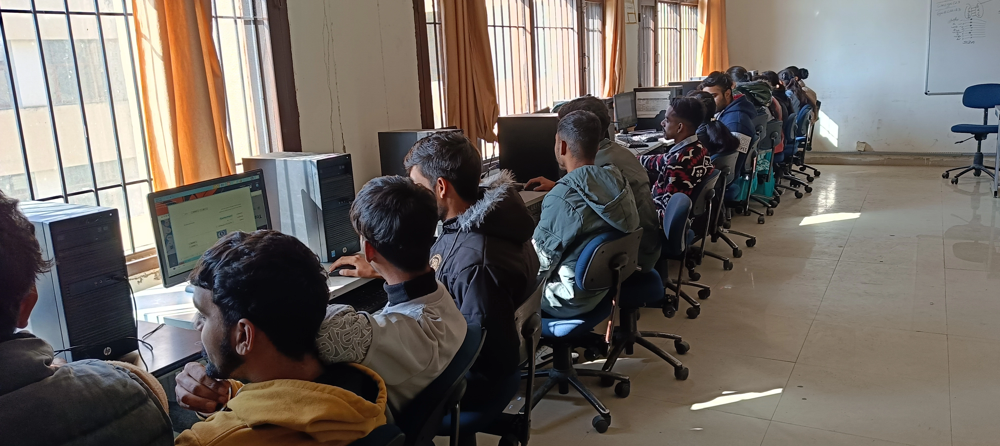
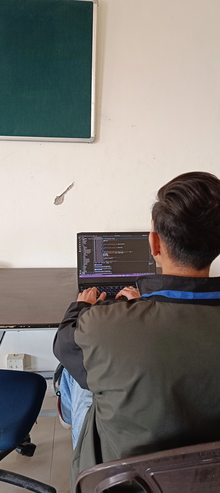
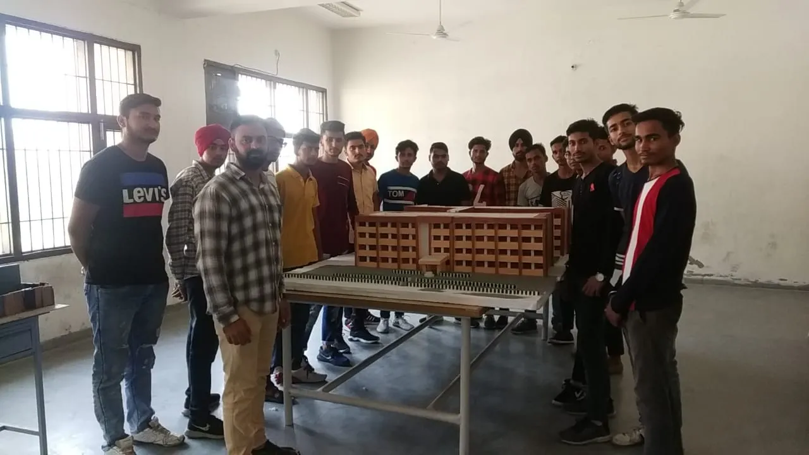

Civil Engineering
The Civil Engineering Department is dedicated to fostering excellence in
education, research, and innovation in the field of civil engineering.
.webp)
Civil Engineering in a Nutshell
- Planning and construction of critical infrastructure: Civil Engineering focuses on designing and building structures such as roads, bridges, and buildings, vital for societal development and functionality.
- Consideration of ecological impact: Civil Engineers strive for sustainable practices, minimizing environmental impact and incorporating eco-friendly solutions in construction and design.
- Ensuring stability and safety of structures: Civil Engineering emphasizes the importance of designing structures that can withstand various loads, ensuring the safety and longevity of buildings and infrastructure.
- Efficient utilization and management of water resources: Civil Engineers play a crucial role in developing systems for water supply, distribution, and wastewater management, addressing essential aspects of public health and environmental conservation.
- Designing and organizing urban spaces: Civil Engineering contributes to the planning and development of cities, optimizing spatial arrangements, transportation networks, and infrastructure for sustainable urban living.
Our Labs
Soil Engineering Lab

A soil engineering lab is a specialized facility equipped to analyze and characterize the properties of
soil, a crucial component in civil engineering projects like foundations, embankments, and retaining
walls. Through hands-on experimentation, students gain valuable insights into soil behavior and its
impact on construction activities
Survey Lab
A survey lab in engineering serves as a practical training ground where students gain hands-on
experience with the tools and techniques used in land surveying and data collection. This crucial
component of many engineering disciplines equips future professionals with the ability to accurately
measure, map, and analyze the physical environment, forming the essential groundwork for various
projects.

Public Health Engineering Lab

A public health engineering lab serves as a practical space where students translate classroom knowledge
into hands-on experience tackling real-world challenges in public health protection. Through diverse
experiments and projects, future engineers delve into various aspects of water supply, sanitation,
environmental health, and other crucial areas to ensure healthy communities
Concrete Lab
A concrete lab in civil engineering delves into the hands-on exploration of concrete, the most widely
used construction material globally. Students gain practical experience with its properties, testing
methods, and behavior, preparing them for future roles in designing, constructing, and maintaining
concrete structures.


 =======
>>>>>>> Stashed changes
=======
>>>>>>> Stashed changes